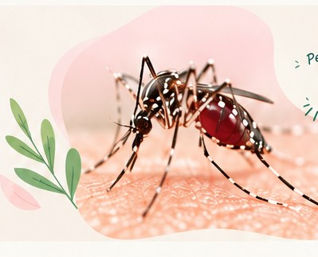
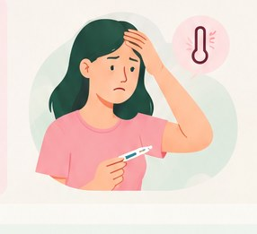
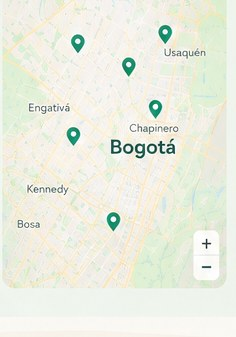

¿Qué es el dengue?
Es una infección viral que puede ser leve o grave. Se transmite por la picadura de mosquitos infectados, principalmente Aedes aegypti.
Conoce más →Es una enfermedad viral transmitida principalmente por la picadura del mosquito Aedes aegypti. Conocer sus síntomas, tratamiento y medidas de prevención puede salvar vidas.

Es una infección viral que puede ser leve o grave. Se transmite por la picadura de mosquitos infectados, principalmente Aedes aegypti.
Conoce más →Puede iniciar con fiebre, dolor de cabeza y muscular. También puede causar dolor detrás de los ojos, náuseas o sarpullido.
Ver síntomas →No existe un medicamento específico contra el dengue. Se recomienda hidratación, reposo y valoración de un profesional de salud.
Ver tratamiento →Evita la acumulación de agua estancada, tapa los recipientes, usa repelente y protege puertas y ventanas con mallas.
Ver consejos →Busca atención médica urgente si presentas alguno de estos síntomas:

Si tienes síntomas,
no te automediques.
Consulta a un profesional de salud.
Vacía y cepilla recipientes que acumulen agua.
Usa repelente siguiendo las instrucciones del producto.
Mantén patios limpios y usa mallas en puertas y ventanas.
Busca centros de salud y laboratorios autorizados para consultar por pruebas de detección del dengue en tu ciudad o municipio.
Los centros de esta maqueta son referencias ilustrativas, no un directorio verificado. Confirma con tu Secretaría de Salud o el prestador antes de desplazarte.
